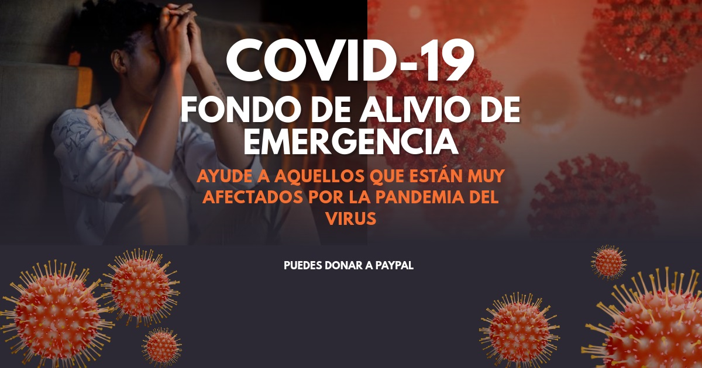
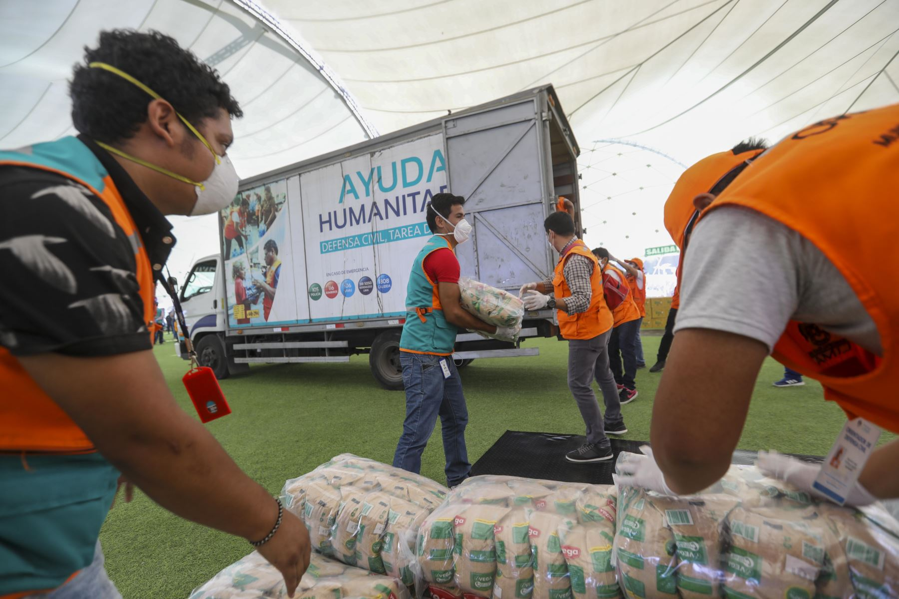
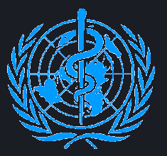
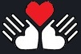

Dona ahora
Con 94$ podemos proporcionar 363 pares de guantes para prevenir el contagio. 
Puedes donar a paypal sin terner una cuenta solo con tu tarjeta.
Puedes donar
1$
5$
25$
50$
100$
Ya hemos reunido mas 100.000 dolares y mas de 150.000 personas se han juntado a la causa
Todo el mundo habla de la enfermedad por coronavirus (COVID-19), y allá donde mires hay información sobre el virus y sobre cómo protegerte. Conocer los datos es fundamental para estar preparado y protegerte a ti mismo y a tus seres queridos. Tristemente, una parte de la información que hay disponible es falsa. Durante una crisis de salud, la desinformación contribuye a que la gente no se proteja y se haga vulnerable a la enfermedad. Además, propaga el miedo y la estigmatización.
Asegúrate de obtener información de fuentes verificadas, como UNICEF y la Organización Mundial de la Salud. Ellos estan trabajando a contrarreloj con expertos en salud de todo el mundo para proporcionar información rigurosa. Informate de las mejores formas de protegerte a ti mismo y a tu familia.
Juntos podemos ganar la batalla al virus
hemos estado respondiendo a la pandemia de COVID-19 en todo el mundo. En nuestro país distribuimos suministros sanitarios como guantes, mascarillas, gel desinfectante de manos y kits de detecciónpara prevenir el contagio y la propagación del virus. Pero ahora son los países más pobres los que más nos necesitan.
Debemos seguir trabajando para distribuir suministros sanitarios a todos los que los necesitan y poder garantizar que, cada niño y niña, cada adolescente y cada familia, reciban la información necesaria para poder prevenir el contagio.
Ahora que la pandemia se extiende aún más, necesitamos tu ayuda.
Por favor, DONA AHORA, para que podamos seguir luchando contra el virus.
Que hacemos.
Mejorar la salud de la infancia es una de las muchas responsabilidades que comporta la lucha contra la pobreza. Unos niños y niñas sanos serán adultos sanos: personas capaces de labrar un futuro mejor para ellos mismos, su comunidad y su país. Mejorar la salud infantil en todo el mundo constituye uno de los principales objetivos de DonameSudamerica. Desde nuestra fundación, hemos avanzado notablemente en el campo de la inmunización, la rehidratación por vía oral como medio para salvar la vida de lactantes afectados de diarrea grave, la promoción y protección de la lactancia materna, la lucha contra el VIH/SIDA, el suministro de suplementos de micronutrientes y la educación sanitaria.
De DonameSudamerica mantiene una amplia presencia sanitaria y alianzas con gobiernos y organizaciones no gubernamentales, tanto a escala nacional como local. De DonameSudamerica conoce las causas de la mortalidad infantil. Dedicamos nuestro esfuerzo diario a ofrecer soluciones prácticas a aquellas mujeres, niños y niñas que se hallan en situación de máximo riesgo. De DonameSudamerica es consciente de lo que supone garantizar la supervivencia y la salud de las mujeres y la infancia.
De DonameSudamerica aborda las muchas amenazas que se ciernen sobre la salud infantil haciendo uso de su amplia experiencia, de su creatividad y de una eficaz logística.

CIF G-8445106-7 - Registro de Fundaciones de competencia estatal con nº de registro 758
1+ 305-549-5688
CONTACTO
Monica carriso.
Contacta con nosotros de L. a V. de 9h a 21h y S. de 11h a 17h
Avalado por unicef y la OMS
